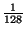
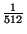
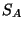
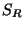

- Hotornot: This policy tries to take advantage of the case in which
there is a single hot element, i.e. an element that is accessed quite often,
in an otherwise cold line. In such cases, it is profitable to
move this single element to a separate hot set and not waste valuable
cache space by storing the whole line. As an example, this case occurs
when a program repeatedly accesses a set of array elements in strides greater
than the cache block size.
In our design, this hot set
is 0.8% (
) of the total cache size,
and thus incurs little space overhead.
We implement this scheme as a variant of LRU.
The way we keep track of the hot element is that corresponding to
every cache line, we record along with its last accessed
information, the actual element that was accessed from the line. We
perform a LRU replacement in the hot set. So, when
a new address is encountered, we first search for it in the hot set
and if found, we update the last accessed information. If not,
we find the candidate which ought to be replaced from the hot set.
Then, we search for the line containing this element in the main cache.
If not found, we bring in this line by
evicting a line from the cache using LRU. While doing this,
we also compare the last accessed information of the hot
element of the line being evicted with the corresponding
information of the element that should be evicted from the hot set
as per LRU. We might want to knock out an element out of the hot set to
accommodate this element.
We have presently made the hot set fully associative. With increasing cache
sizes, this will increase the cost of searching in the hot set
substantially, we need to either limit the associativity
of the hot set, or put a limit on its size. We have not yet
investigated this aspect of the scheme.
- Firstnot: This scheme tries to exploit the slight aberration
in the data access patterns of the programs. To take an example, a program
tries to access some specific address, that is not in its active set, and
which it does not plan to access in the future. This may occur as a result of
having to check for some error condition.
We have based this scheme on LRU and LFU. Thus, corresponding to every cache line,
we store both its last accessed and count information. Whenever
we need to evict a line (this is decided based on LRU), we look at the
count information of the cache line. If the count is more
than 1, we do not make the replacement and set the count to 1, otherwise, we do
the replacement.
- Victim: In this scheme, we have a victim cache that is
0.2% (
) of the total cache size, is fully associative,
and follows FIFO policy both in the replacements from the main
as well as the victim cache.
- DiffBlock: In this scheme, we explore whether partitioning the
cache based on whether it is a stack, heap or global data has any effect
on the cache miss rates.
- LFU_over_LRU: In this scheme, we have tried to incorporate
both the global history (as can be found in LFU), with the local
history (as found in LRU). For example, the simple LRU policy
simply evicts the line which was hot in the past, but has not
been accessed during the window of the LRU. We attempt to rectify
this in this scheme.
In this scheme, every set is composed
of a queue of cache lines, and among queues, LFU is followed,
but inside a queue, LRU policy is followed. Cache lines are only evicted
from the least priority queue. By varying the number of
queues, the scheme allows us to explore the full
spectrum of schemes in between LRU and LFU. As we have
implemented it, the scheme has too much computational overhead,
but still, it is an attempt to combine the advantages of
both LRU and LFU. This also aided us in the debugging process,
because by having varying number of queues,
we could mimic both LRU and LFU.
- LRU_over_LFU: This is just the reverse of the above scheme.
LRU is followed among queues, and LFU is followed inside a queue.
- LRU_dirty_secondchance: This was our attempt to explore the
trade-off between the number of cache misses and the number of dirty blocks
evicted and forced to be written to memory.
Here, we give an extra chance to a dirty line by not evicting it
the first time it is encountered.
- Prefetch: In this version, we augmented LRU in a simple way. For
example, LRU performs miserably for any program that accesses in a loop a
data set larger than what could possibly fit in the cache. In fact, for this case,
MRU (Most Recently Used) is optimal. We could avoid such misses,
if we could know that the line we are evicting now, contains the element that
would be accessed the soonest.
To implement this, we keep
track of the past accesses, use this knowledge to speculate what
is going to
be accessed next, and if the data is being evicted, prevent it from
being evicted.
A more general form of this would be to
pro-actively go and prefetch the data so that it is actually present
in the cache when needed, but, we cannot do this in our constrained framework.
Currently, we detect only strides, based on the last 2 accesses the cache system has seen.
- Side: This scheme tries to mimic LRU with a much less overhead.
In this scheme, a single counter tries to keep track of which elements in the set
have been accessed recently (), and which are fit for replacement ().
On every hit to a cache line, the line becomes part of .
Essentially, this means that
the counter moves to include the
element, only if the element did not originally belong to . In case a
cache line has to be replaced, the line pointed to by the counter is evicted and the
counter is subsequently increased by 1. The schemes thus loses all history
information whenever the last cache line of a set registers a hit.